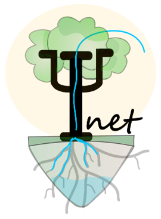
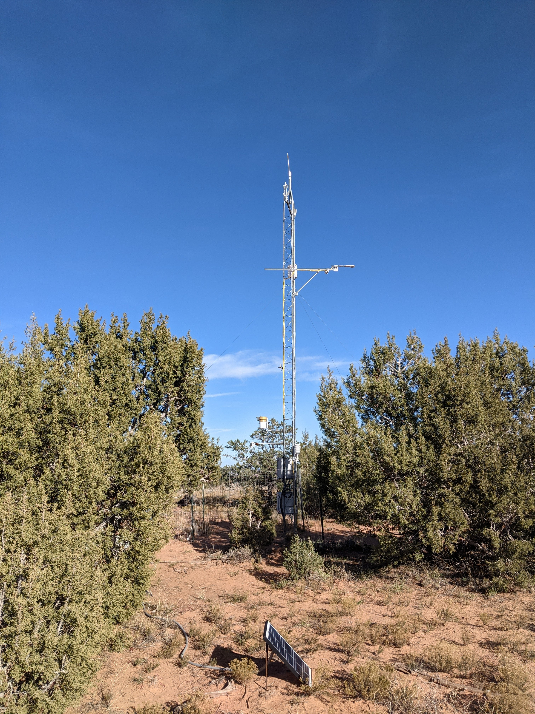
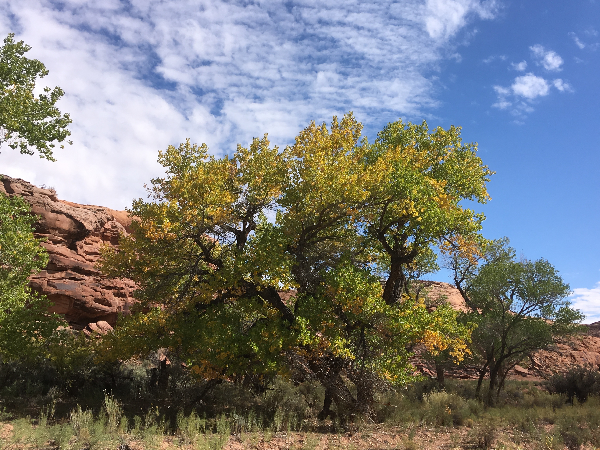
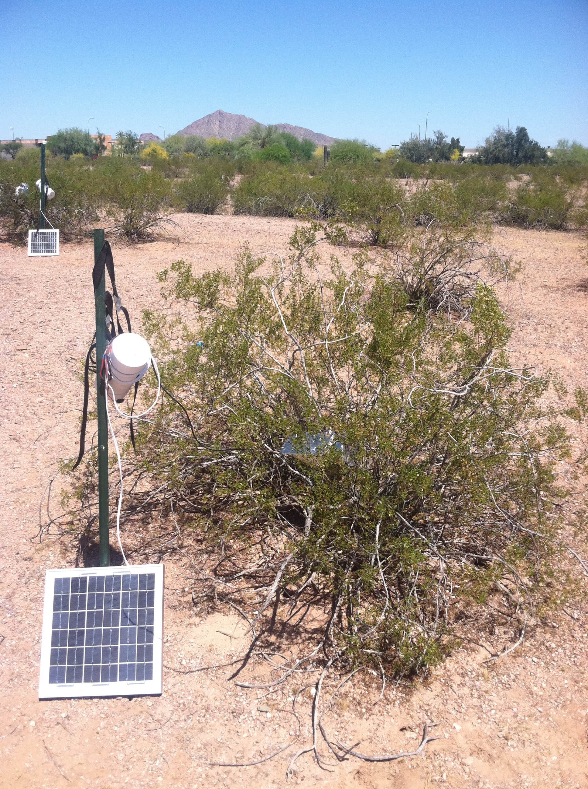
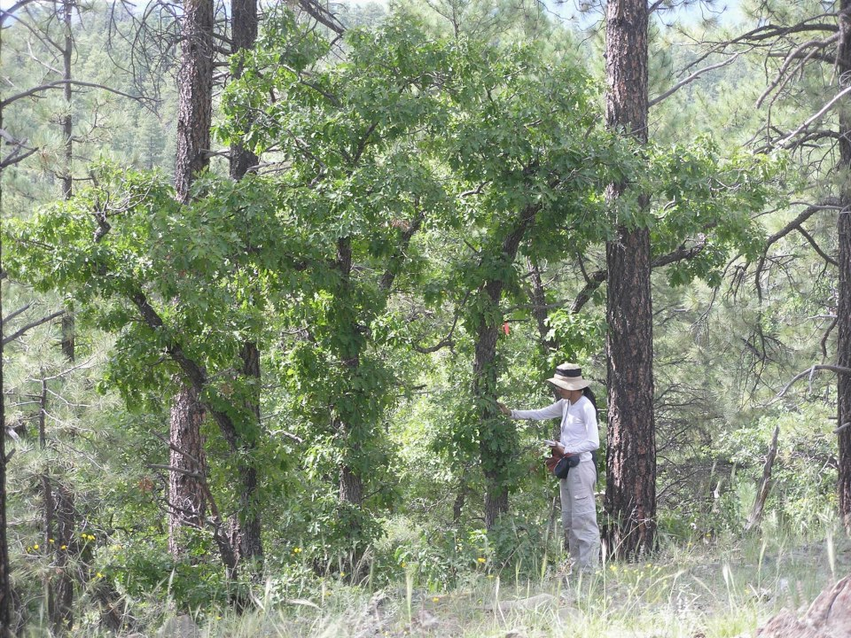

Research
Network science for plant water potential
Plant water potential data is critical to understanding plant and ecosystem function, yet are discrete and difficult to discover. To tackle this challenge, Kim Novick and I established PSInet, a global water potential database. We incentivize scientists to contribute their data to the network in exchange for co-authorship on the data publication and early access to the completed database. Armed with a centralized repository of harmonized water potential time series, our network will be equipped to address foundational questions, promote synthetic analyses, and provide a validation dataset for the modeling and remote sensing communities.

Connecting plant water potential with proximal and satellite remote sensing

While water potential underlies many plant and ecosystem functions, direct measurements can be difficult to collect. Hyperspectral and microwave remote sensing offer possible proxies for plant water potential, and careful validation is needed to develop useful proxies. In a recent project, I used the Rainfall Manipulation experiment at the Santa Rita Experimental Range to evaluate how leaf-level hyperspectral corresponds with plant water potential across a pulse-drydown experiment. At the creosote shrubland NEON site, I connect psychrometer timeseries of plant water potential with vegetation optical depth over a growing season.
Water use strategies from plants to fluxes
Vascular plants face an inevitable tradeoff between carbon gain and water loss. While plant taxa have long been classified by drought tolerance using multiple metrics, high-frequency instrumentation such as sap flux, stem psychrometry, and eddy covariance have allowed for response-based categorization of plant hydraulic regulation. I return to the pinyon-juniper woodlands to connect plant hydraulic regulation to ecosystem carbon and water fluxes. Predawn water potential improves Monteith-style prediction of tower GPP over the 2021 growing season.

Stomatal regulation in desert riparian trees

In dryland ecosystems, riparian trees are foundation species that provision key ecosystem services, including habitat for rare or endangered species. Thus, it is important to understand riparian tree responses to increasing atmospheric dryness and water limitation. Using sap flux time series, I modeled how the sensitivity of stomatal conductance to vapor pressure deficit changes sub-seasonally in (1) a common garden drought experiment and (2) nine naturally-occurring species across an elevation gradient.
Hydraulic behavior and NSC dynamics of Larrea tridentata
Plant water potential (\(\Psi\)) is an integrated measure of water status that underlies the critical plant functions of photosynthesis and transpiration. However, \(\Psi\) is typically measured too infrequently to capture its dependence on environmental variables such as soil moisture and atmospheric dryness, which can be highly dynamic. In the evergreen desert shrub Larrea tridentata, I used sub-daily measurements of \(\Psi\) coupled with frequent monitoring of non-structural carbohydrates to understand (1) the diurnal and seasonal responses of plant water status to environmental drivers and (2) the consequences for plant carbon dynamics.

Species coexistence under water limitation

Do co-existing plants partition water resources as suggested by species coexistence theory? In an early attempt to blend community ecology with plant ecophysiology, I compared stem and soil water isotopes along an elevation gradient in Northern Arizona, ranging from the upland Sonoran Desert to the spruce-fir forests in the San Francisco Peaks. By calculating niche overlap with output from a Bayesian mixture model, we found that plants in more arid ecosystems do indeed have less overlap between species pairs than plants in more mesic ecosystems.